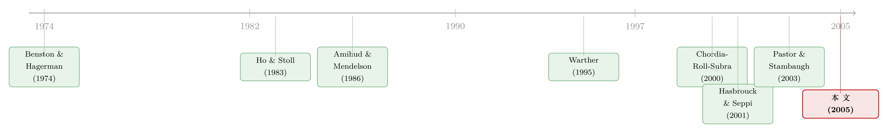

市场快「干涸」的那一刻：股与债的流动性，原来听的是同一个人
本文读的是 Chordia, Sarkar & Subrahmanyam (2005, Review of Financial Studies)：作者用一个跨市场的 向量自回归 (vector autoregression, VAR)，把股票与美国国债两个市场的买卖价差、深度、收益、波动率和订单流放进同一个系统里联立估计，发现两个市场的流动性与波动率「创新」(innovation) 显著正相关——它们被同一批共同因子推动；更关键的是，波动率冲击能预测流动性的变化，而在危机期里，货币宽松与流向政府债基金的资金都能预报债券市场的流动性。一句话：交易成本意义上的「微观流动性」，和资金在经济各部门间流动的「宏观流动性」，本是一根藤上的两只瓜。
1 引言：当「随时能成交」这个假设突然失效
打开任何一本资产定价的教科书，你都会在不起眼的地方读到一句话：投资者可以「以不影响价格的方式，买卖任意数量的证券」。整座大厦——从 CAPM 到无套利定价——很大程度上就架在这句话上。可现实里，交易是有摩擦的：买卖价差、卖空限制、涨跌停断路器，每一样都在悄悄地改写价格。
平日里，这些摩擦小到可以忽略。但 1998 年秋天，长期资本管理公司 (LTCM) 的合伙人从东京、伦敦打来电话，报告的是同一件事：他们的市场「干涸」了——没有买家，没有卖家，根本无法从大头寸里全身而退。《华尔街日报》记下了这一幕。流动性，这个平时谁也不在意的东西，会在最需要它的时候蒸发。
于是一个自然的问题浮出水面：流动性到底从哪里来？它为什么会同时、在多个市场一起消失？
在这篇论文之前，关于流动性的研究是两条互不交叉的支流。一条研究股票市场，一条研究国债市场，各做各的。但作者从一开始就抛出一个直觉上很有说服力的猜想：股票和债券的流动性，很可能是一起呼吸的。
为什么？至少有三条暗线把两个市场拴在一起。其一，做市商承担的是库存风险——当股、债的波动率一起上升（这两个市场的波动率本就高度联动），做市商在两个市场上扛的风险同时变大，价差自然一起变宽。其二，资产配置策略天天在股、债之间搬钱：股票出坏消息，资金「奔向安全」(flight to quality)，从股市涌入国债，价格压力和流动性冲击在两个市场间传导。其三，如果美联储放水，多出来的资金可能同时灌进股市和债市，让两边的订单流和流动性一起改变。
接着，一个更大胆的念头出现了：如果流动性可以被「货币冲击」这样的共同力量驱动，那么交易台上那个以交易成本度量的流动性（微观流动性），和宏观意义上资金在部门间的流动（macro liquidity），是不是同一件事的两面？
这篇论文要做的，就是把这根暗线挑明、量出来。
2 识别策略：把六张脸放进一个 VAR
作者的方法论核心，是一个跨市场、多变量的向量自回归。在每个市场里，他们关心五类变量：买卖价差、市场深度、收益、收益波动率、订单失衡 (order imbalance)。把股、债两个市场拼在一起，就是一个相当大的联立系统。VAR 的好处是不预设谁因谁果，而是让数据自己说话：今天债券波动率的一个冲击，会在随后几天里如何渗进股票的价差？股票的订单流，又会不会预报债券的深度？
但要让 VAR 给出干净的答案，得先解决一个麻烦：流动性序列里塞满了确定性的日历规律——星期几效应、月份效应、假期前后交易萎缩、长期时间趋势，还有 1997 年 6 月那次美股最小报价单位 (tick size) 的下调，把价差整体往下挪了一大截。这些东西如果不剔掉，VAR 抓到的「联动」可能只是两个市场都在过同一个周五而已。
首先，收益与波动率不是直接拿原始价格算的，而是从下面这个剔除了星期几效应和自相关的回归里取残差（收益）和残差绝对值（波动率）：
$$ R_{it} = a_1 + \sum_{j=1}^{4} a_{2j} D_j + \sum_{j=1}^{12} a_{3j} R_{it-j} + e_{it} $$
其中 \(D_j\) 是星期几的虚拟变量，\(R_{it}\) 是雷曼兄弟债券指数或 CRSP 市值加权指数的日收益。
接着，对所有序列（价差、深度、订单失衡、收益、波动率）做一遍 Gallant-Rossi-Tauchen 式的两步标准化。第一步是均值方程，把序列回归到一组调整变量 \(x\) 上：
$$ w = x'\beta + u \quad (\text{mean equation}) $$
第二步用残差平方的对数，刻画方差本身随这些变量的变化：
$$ \log(u^2) = x'\gamma + v \quad (\text{variance equation}) $$
然后，用方差方程把均值残差标准化，得到最终用于 VAR 的调整后序列：
$$ w_{adj} = a + b\left[\hat{u} / \exp(x'\gamma/2)\right] $$
这里 \(a\)、\(b\) 的选取，使得调整后序列与原序列有相同的样本均值和方差——也就是说，只洗掉确定性的成分，不改变序列的尺度。调整变量 \(x\) 里装了什么？四个星期几虚拟变量、十一个月份虚拟变量、假期虚拟变量、时间趋势及其平方、宏观公告日（GDP、就业、通胀）前后的虚拟变量、tick size 下调后的虚拟变量，以及三个危机虚拟变量：1994 年的债市危机（3 月 1 日–5 月 31 日）、1997 年的亚洲金融危机（7 月 2 日–12 月 31 日）、1998 年的俄罗斯违约危机（7 月 6 日–12 月 31 日）。
这套「先把日历和危机效应回归掉、再做 VAR」的两步法，是这篇论文识别上的关键。它意味着论文后面讲的「股债流动性联动」，已经不是因为两个市场共享同一个星期五或同一场危机日历——而是剔除这些之后，残差层面仍然显著相关。这正是「共同因子」说法的底气所在。
但真正关键的一步，是论文不止步于「联动」。它进一步把两个外生的「宏观流动性」代理变量请进系统：一是净借入准备金 (net borrowed reserves)，作为货币政策松紧的度量——Garcia (1989) 的思路是，美联储的货币立场能通过改变保证金借款条件、缓解交易商的融资约束，从而影响流动性；二是共同基金的资金流，分别流向股票部门和政府债券部门。如果这两个变量能预报流动性，那么宏观与微观这两种「流动性」之间，就被实证地接上了。
3 数据：GovPX 的国债报价，ISSM/TAQ 的股票成交
样本期是 1991 年 6 月 17 日到 1998 年 12 月 31 日，起点由国债逐笔数据的可得性决定。
债券一侧，数据来自 GovPX——它汇总主要经纪商在交易商间经纪市场的报价与成交，逐笔、精确到秒，且直接标明每笔是买方还是卖方发起（所以订单失衡可以直接算，不用猜方向）。作者只用当期发行的 10 年期国债 (on-the-run 10-year note)，因为想抓的是相对长端的固定收益流动性；虽然当期券只是国债存量的一小部分，但它占了交易商间市场 71% 的活跃度（Fabozzi & Fleming, 2000）。30 年期券被剔除，因为 GovPX 对它的覆盖偏小且不稳定，且 Cantor Fitzgerald/eSpeed 这家大经纪商不上报数据。
股票一侧，数据是 ISSM（1991–1992）接 NYSE TAQ（1993–1998），只用 NYSE 股票，以避免 NYSE 与 Nasdaq 交易机制差异污染结果。个股先按日聚合，再按上一年末市值做市值加权，得到整个市场的日度流动性序列。
观测单位是市场层面的日度。剔除各种异常记录后，第一段子样本有约 1503 个债券交易日、1502 个股票交易日，tick size 下调后的第二段约 380 个交易日。
几个值得记住的量级（见原文表 1）：当期 10 年国债的平均报价价差是每 100 美元面值 \$0.027，股票是每股 \$0.186；tick size 下调后分别降到 \$0.022 和 \$0.129。日度绝对订单失衡，债券约 14%、股票约 6%。深度方面，债券约 \$6.388 百万、股票约 \$0.634 百万。一个有意思的细节：债券价差的中位数与均值几乎相等，说明日度流动性分布近乎对称、几乎不偏。而债券价差的变异系数 (coefficient of variation, CV) 高达约 25，远高于股票价差的约 8.3——国债的流动性，平时很稳，但抖起来比股票更剧烈，这一点在 1998 年俄罗斯危机时表现得淋漓尽致：原始序列里，债券价差在 1998 年末出现了肉眼可见的结构性跳升。
4 主要结果：联动、预测、与那条「宏观—微观」的桥
把这套系统跑出来，论文落到三层结论上。
第一层，联动是真的。 剔除掉所有日历与危机效应之后，股票与债券市场的流动性创新之间、波动率创新之间，相关系数都显著为正、且统计上显著异于零。这意味着两个市场的流动性，背后确实站着共同的影响因子——不是巧合，不是共享日历。（关于股债之间为什么会被同一个冲击同时击中，可参见《股和债，到底在听同一个人说话吗？》；而流动性本身为什么会「成群结队」地一起动，则可参见《被「打包」进同一个篮子的股票，就开始一起呼吸了》。）
第二层，因果的方向感。 在这套 VAR 里，跨市场的动态主要是从波动率流向流动性：波动率冲击能预报随后流动性的位移。这与库存模型的直觉完全吻合——波动一上来，做市商扛的库存风险变大，于是收手、放宽价差。换句话说，「波动率」是这套系统里更靠上游的那个变量。
第三层，也是这篇论文真正的贡献——宏观流动性能预报微观流动性。 净借入准备金的创新，与流动性的改善同期正相关，并且在危机期间对流动性有「适度」(modest) 的预测力：货币放松，与流动性增加相伴而行。更干净的是基金资金流：流向股票部门和政府债券部门的资金流创新，在预报流动性上扮演了关键角色——尤其是流向政府债基金的钱，能预测债券市场的流动性。
把这三层叠起来，论文的中心命题就立住了：以银行准备金和共同基金投资为形式的资金流，解释了股债流动性共动的一部分。交易台上那个「价差」，和宏观经济里那股「资金潮」，被同一根绳子拴着。这正是标题里「听的是同一个人」的含义——那个人，很大程度上是美联储和资金的流向。
值得说明的是，论文正文里 VAR 系数表与脉冲响应的完整数字，超出了本文所据材料的范围；上面报告的方向与显著性，来自论文摘要、引言中作者明确陈述的结论，以及表 1 的描述性量级。我不会替它编造具体的系数或 t 值。
5 文献脉络：从「价差怎么定」到「流动性会一起消失」
要理解这篇论文站在哪里，得把这条研究的来路捋一遍。
最早，流动性研究关心的是横截面：为什么这只股票价差大、那只小？Benston & Hagerman (1974) 和 Stoll (1978) 在场外市场里拆解价差的决定因素，是这一支的源头。紧接着，Amihud & Mendelson (1986) 把买卖价差正式写进资产定价——流动性差的资产，要求更高的预期收益，从此「流动性」从微观结构的边角料，升格为定价因子。与此并行的，是 Ho & Stoll (1983)、O'Hara & Oldfield (1986) 的库存模型，告诉我们做市商如何因风险而调整报价——这正是本文「波动率→流动性」机制的理论底座。

接着，随着数据变密，研究的重心从横截面转向时间序列与共同性。Chordia, Roll & Subrahmanyam (2000)、Hasbrouck & Seppi (2001)、Huberman & Halka (2001) 几乎同时发现：流动性存在共同性 (commonality)——个股的流动性会一起涨落。Chordia, Roll & Subrahmanyam (2001) 进一步用长样本研究了股票市场总价差、深度与交易活动的时序规律。债券这边，Fleming (2003) 系统度量了国债市场的流动性，Fleming & Remolona (1999) 研究公告前后的价格形成，Krishnamurthy (2002) 则盯着 on-the-run 与 off-the-run 的利差。
与此同时，另一条看似无关的支流在生长：资金流与货币政策对市场的影响。Warther (1995)、Edelen & Warner (2001)、Goetzmann & Massa (2002) 研究基金资金流如何牵动收益；Garcia (1989)、Fleming & Remolona (1997)、Fair (2002) 研究货币冲击如何撼动股债价格。还有一条更宏大的支线——Jones (2001)、Amihud (2002) 发现流动性能预测时序上的预期收益，Pastor & Stambaugh (2003) 则发现预期收益在横截面上与流动性风险相关（这一支的味道，可参见《数不清的「零」：新兴市场用一串静止的价格，量出了流动性的价格》）。
于是，这篇论文出现在两条河的交汇处。 它把「股债流动性的共同性」与「资金流/货币政策的宏观驱动」这两条原本各流各的支流，第一次汇进同一个 VAR。它既不是单纯的微观结构论文，也不是单纯的货币经济学论文——它的位置，恰恰是把两者焊在一起的那个接头。后来研究股债之间的动量溢出（见《去年股票涨得好，今年的债就更值钱》）、以及危机里公司债流动性如何崩塌（见《差点死掉的那个市场：一场公司债流动性危机的微观解剖》），都能在这篇 2005 年的论文里找到血缘。
6 评论与延伸（Q&A + 研究方向）
(a) 几个可能的疑问
Q：用交易商间市场 (interdealer) 的国债数据，能代表整个债券市场的流动性吗？
这是最值得警惕的一点。GovPX 抓的是经纪商之间的批发市场，订单失衡是交易商间的失衡，不是客户的失衡。作者的辩护是：交易商间的失衡，多半是它们在替客户「平头寸」时产生的，因而是客户失衡的一个有噪声的估计。这个假设是否成立，直接关系到「订单流」这条暗线的解读——它是合理的近似，但确实是论文识别上的一个软肋。
Q：「联动」会不会只是两个市场共享同一份危机日历的假象？
论文用三个危机虚拟变量（1994 债市、1997 亚洲、1998 俄罗斯）连同日历效应一起回归掉了，再在残差层面看相关性。所以它报告的正相关，已经不是因为两个市场一起经历了 1998 年秋天。这正是两步调整法的价值。当然，能不能剔干净所有共同的确定性成分，永远是个程度问题。
Q：为什么是「波动率→流动性」，而不是反过来？
这来自库存模型的直觉：波动率上升→做市商承担的库存风险变大→收窄报价规模、放宽价差。VAR 里波动率冲击对随后流动性有预测力，方向上支持「波动率更靠上游」。但 VAR 的「预测」不等于结构因果，反向与同期的反馈仍可能存在——这是所有简约式 VAR 的通病。
Q：国债价差的均值只有每百元面值 \$0.027，比股票小得多，是不是国债天生更「流动」？
部分是机制造成的——国债最小报价单位更小，价差自然更窄；而且国债主要受通胀、货币政策、就业这类宏观信息驱动，逆向选择 (adverse selection) 问题远小于个股（个股有大量关于自身的私有信息）。再者别忘了，这是批发市场的价差。所以「更小的价差」不能直接读成「对所有人都更易交易」。
Q：货币政策对流动性的预测力，作者自己也说只是「适度」(modest)，那这条结论可信吗？
诚实地说，净借入准备金对流动性的预测力，更多体现在同期相关和危机期间，平时的预测力有限。真正更稳健的那条桥，是基金资金流——尤其是流向政府债基金的钱预报债券流动性。所以这篇论文的「宏观—微观」之桥，资金流那一墩比货币政策那一墩更结实。
Q：这套结论能外推到今天的市场吗？
要小心。样本停在 1998 年，是 tick size 还以「八分之一」「十六分之一」报价、电子化尚浅、高频交易尚未统治订单簿的时代。十进制报价、电子做市、央行资产负债表政策都已大变。结论的机制（库存风险、资金流、货币松紧）大概率仍然成立，但具体量级几乎肯定不同。
(b) 几个可能的研究问题与提案
1. 把这套 VAR 搬到公司债市场。 【经济故事】公司债同时带着「利率风险」（与国债同源）和「信用风险」（与股票同源），按理说它的流动性该是股、债两个市场流动性的「混血」。把公司债流动性接进这个跨市场 VAR，能直接检验它到底更像谁、在危机里被谁拖下水。 【可行性】高。TRACE 提供了 2002 年以后逐笔公司债成交，配合 CRSP/Compustat 和国债数据完全可做；识别上沿用本文两步调整 + VAR 即可，难点在公司债的非连续交易导致价差度量噪声大（这正是《把「成交价」从「成交量」里解放出来》关心的问题）。
2. 外资持有人是流动性共动的「放大器」还是「稳定器」？ 【经济故事】本文把共动归给资金流。一个自然的延伸：当某类持有人（如外国投资者、被动基金）在股、债两边同时进出，是不是会加强两个市场的流动性联动？危机里的「一起跑」会不会正是因为持有人结构高度重叠？ 【可行性】中。需要持有人层面的持仓数据（如 13F、TIC、各国央行/主权基金披露），与日度流动性对齐有难度；识别上可用持有人重叠度作为横截面变异，做 panel-VAR 或交互项。数据是主要瓶颈。
3. 央行资产负债表政策（QE/QT）对股债流动性共动的因果效应。 【经济故事】本文的「货币→流动性」用的是净借入准备金，时代局限明显。今天更干净的冲击是 QE/QT 的实施窗口与购债清单——央行直接买走某些券，会怎样改变这些券乃至相邻市场的流动性？ 【可行性】高。有大量准自然实验（购债清单的纳入/剔除、QT 的缩表节奏）可用，识别可借 DiD 或断点；相关思路见《央行放再多水，也要看「水」流到了谁的池子里》。
4. 流动性共动的「状态依赖」：平时弱、危机强？ 【经济故事】本文在全样本里估一个线性 VAR，但直觉上股债流动性的联动在危机里应该陡然增强（「一起干涸」）。把联动写成随波动率或压力指数变化的状态依赖关系，能刻画「平时各走各、危机手拉手」的非线性。 【可行性】中。用平滑转移或马尔可夫切换 VAR 即可实现，数据要求不高；难在样本里的危机次数有限，状态识别的统计功效偏弱。
7 我的判断
这篇论文真正的贡献，不在某一个惊人的系数，而在把问题问对了：它第一个把「股债流动性的共同性」和「宏观资金流/货币政策」装进同一个联立系统，从而在交易成本意义的微观流动性，与资金在部门间流动的宏观流动性之间，架起一座可检验的桥。这个「宏观—微观」框架，比它任何单个实证数字都更经得起时间。
对识别的担忧，我有三点。其一，交易商间订单失衡能否代表客户失衡，是个未被直接验证的关键假设。其二，VAR 是简约式的，「预测」与「因果」之间的距离，论文并未完全跨越——尤其货币政策那条线，作者自己也承认只是「适度」。其三，样本停在 1998 年、且债券只用当期 10 年券，外推到十进制报价、电子化、央行扩表后的世界要格外谨慎。
后续我最想看到的，是把同一套思路放到今天的微观数据上重做一遍：公司债（TRACE）、ETF、央行购债清单，看「波动率→流动性」「资金流→流动性」这两条机制在结构变迁后是否还稳；以及，把持有人结构（特别是外资与被动资金）显式地放进来，检验流动性共动到底是被谁放大的。这篇 2005 年的论文给出了一张地图——值得有人拿着今天的数据，沿着它再走一遍。
参考文献
- Amihud, Y. (2002). Illiquidity and Stock Returns: Cross-Section and Time-Series Effects. Journal of Financial Markets 5, 31–56.
- Amihud, Y., & Mendelson, H. (1986). Asset Pricing and the Bid-Ask Spread. Journal of Financial Economics 17, 223–249.
- Benston, G., & Hagerman, R. (1974). Determinants of Bid-Asked Spreads in the Over-The-Counter Market. Journal of Financial Economics 1, 353–364.
- Chordia, T., Roll, R., & Subrahmanyam, A. (2000). Commonality in Liquidity. Journal of Financial Economics 56, 3–28.
- Chordia, T., Roll, R., & Subrahmanyam, A. (2001). Market Liquidity and Trading Activity. Journal of Finance 56, 501–530.
- Chordia, T., Sarkar, A., & Subrahmanyam, A. (2005). An Empirical Analysis of Stock and Bond Market Liquidity. Review of Financial Studies 18(1), 85–129.
- Fleming, M. (2003). Measuring Treasury Market Liquidity. Federal Reserve Bank of New York Economic Policy Review 9, 83–108.
- Fleming, M., & Remolona, E. (1999). Price Formation and Liquidity in the U.S. Treasury Market: The Response to Public Information. Journal of Finance 54, 1901–1915.
- Garcia, G. (1989). The Lender of Last Resort in the Wake of the Crash. American Economic Review 79, 151–155.
- Hasbrouck, J., & Seppi, D. (2001). Common Factors in Prices, Order Flows and Liquidity. Journal of Financial Economics 59, 383–411.
- Ho, T., & Stoll, H. (1983). The Dynamics of Dealer Markets Under Competition. Journal of Finance 38, 1053–1074.
- Huberman, G., & Halka, D. (2001). Systematic Liquidity. Journal of Financial Research 24, 161–178.
- Krishnamurthy, A. (2002). The Bond/Old-Bond Spread. Journal of Financial Economics 66, 463–506.
- Pastor, L., & Stambaugh, R. (2003). Liquidity Risk and Expected Stock Returns. Journal of Political Economy 111, 642–685.
- Stoll, H. (1978). The Pricing of Security Dealer Services: An Empirical Study of NASDAQ Stocks. Journal of Finance 33, 1153–1172.
- Warther, V. (1995). Aggregate Mutual Fund Flows and Security Returns. Journal of Financial Economics 39, 209–235.